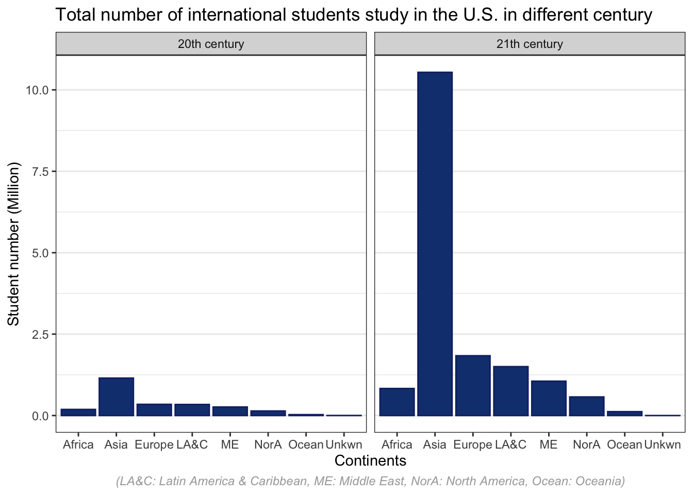
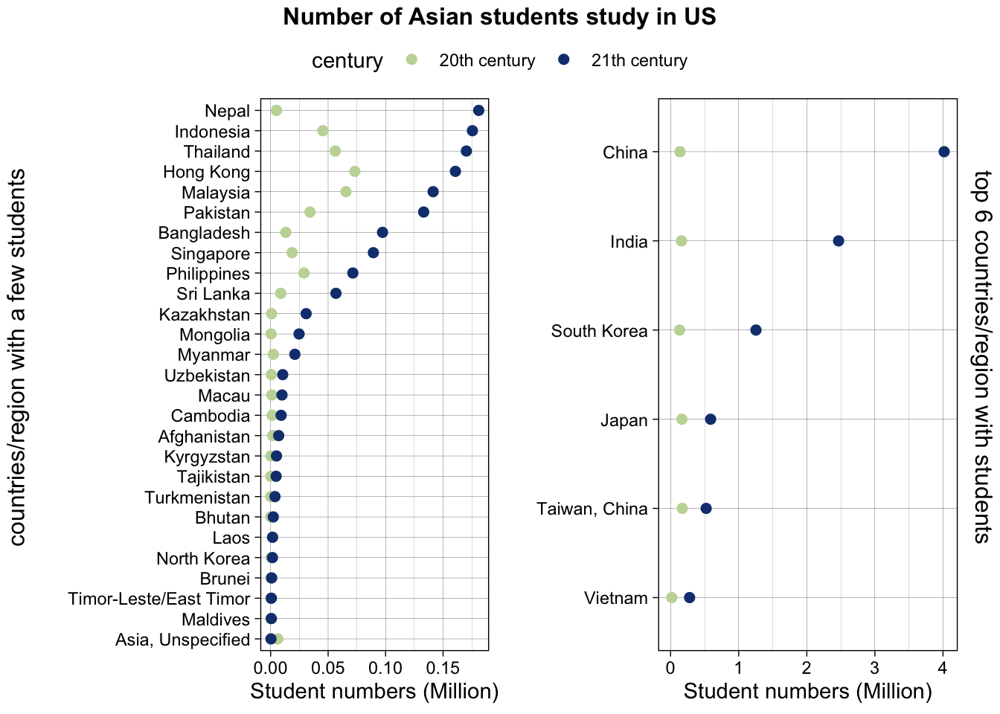

Chapter 5 Results
library(ggplot2)
library(ggpubr)5.1 What the number of international students and growth trend in 20 century and 21 century
5.1.1 Total number of international students study in the U.S. in different century
tidysum <- df.tidy %>%
select(`Place of Origin`, Continents, Academic_year, student_numbers, century) %>%
group_by(Continents, century) %>%
summarize(.,across(where(is.numeric), ~sum(.x, na.rm = T)/1000000)) %>%
ungroup() %>%
mutate(Continents = replace(Continents,
Continents == "Latin America & Caribbean", "LA&C")) %>%
mutate(Continents = replace(Continents,
Continents == "Middle East", "ME")) %>%
mutate(Continents = replace(Continents,
Continents == "North America", "NorA")) %>%
mutate(Continents = replace(Continents,
Continents == "Unknown State", "Unkwn")) %>%
mutate(Continents = replace(Continents,
Continents == "Oceania", "Ocean"))
ggplot(tidysum, aes(x = Continents, y = student_numbers)) +
geom_col(color = "#142b73", fill = "#153E7E") +
facet_wrap(~century) +
ggtitle("Total number of international students study in the U.S. in different century") +
xlab("Continents") +
ylab("Student number (Million)") +
theme_bw() +
labs(caption = "(LA&C: Latin America & Caribbean, ME: Middle East, NorA: North America, Ocean: Oceania)") +
theme(panel.grid.major.x = element_blank(),
plot.caption = element_text(color = "darkgrey", face = "italic", size = 9,
hjust = 0.5)) 
5.1.2 trend of international students study in the U.S. in different century
draw.totalnum <- function(c){
tidytotal.num <- df.tidy %>%
select(`Place of Origin`, Continents, Academic_year, student_numbers, century) %>%
filter(century == c) %>%
group_by(Continents, Academic_year, century) %>%
summarize(.,across(where(is.numeric), ~sum(.x, na.rm = T))/100000) %>%
ungroup()
ggplot(tidytotal.num, aes(as.numeric(substr(Academic_year, 1,4)),
student_numbers, col = Continents)) +
geom_line(alpha = 0.5) +
geom_point(alpha = 0.8) +
xlab("")+ ylab("")+
ylim(0,9) +
theme_bw() +
theme(panel.grid.major.x = element_blank(),
plot.caption = element_text(color = "grey", face = "italic", size = 9,
hjust = 0.5)) +
scale_color_brewer(palette="Dark2")
}
p20 <- draw.totalnum("20th century")
p21 <- draw.totalnum("21th century")
pt <- ggarrange(p20, p21, ncol=2, nrow=1, common.legend = TRUE, legend="top")
annotate_figure(pt,
top = text_grob("Total number of international students study in the U.S. in different century",
face = "bold", size = 12),
left = "Student number (Million)",
bottom = "Year in 20th centry (left) and 21th centry (right)")
5.1.3 The largest increase in the total number of students per country/region in two centuries on the continent
tidysum.asia <- df.tidy %>%
select(`Place of Origin`, Continents, Academic_year, student_numbers, century) %>%
filter(Continents == "Asia") %>%
group_by(`Place of Origin`, century) %>%
summarize(.,across(where(is.numeric), ~sum(.x, na.rm = T)/1000000)) %>%
ungroup()
top5.asia <- tidysum.asia %>%
group_by(`Place of Origin`) %>%
summarise(total_num = sum(student_numbers)) %>%
slice_max(total_num, n = 6) %>%
select(`Place of Origin`)
p.top6 <- tidysum.asia %>%
filter(`Place of Origin` %in% top5.asia$`Place of Origin`) %>%
ggplot(aes(x = student_numbers,
y = fct_reorder2(`Place of Origin`, century == "21th century", student_numbers,
.desc = FALSE), color = century)) +
geom_point(size = 2) +
ylab("") +
xlab("Student numbers (Million)")+
theme_linedraw() +
scale_color_manual(values = c("#C3D7A4", "#153E7E"))
p.other <- tidysum.asia %>%
filter(!(`Place of Origin` %in% top5.asia$`Place of Origin`)) %>%
ggplot(aes(x = student_numbers,
y = fct_reorder2(`Place of Origin`, century == "21th century", student_numbers,
.desc = FALSE), color = century)) +
geom_point(size = 2) +
ylab("") +
xlab("Student numbers (Million)")+
theme_linedraw() +
scale_color_manual(values = c("#C3D7A4", "#153E7E"))
pt2 <- ggarrange(p.other, p.top6, ncol=2, nrow=1, common.legend = TRUE, legend="top")
annotate_figure(pt2,
top = text_grob("Number of Asian students study in US",
face = "bold", size = 12),
right = "top 6 countries/region with students",
left = "countries/region with a few students")